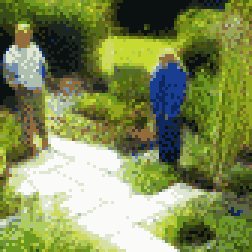
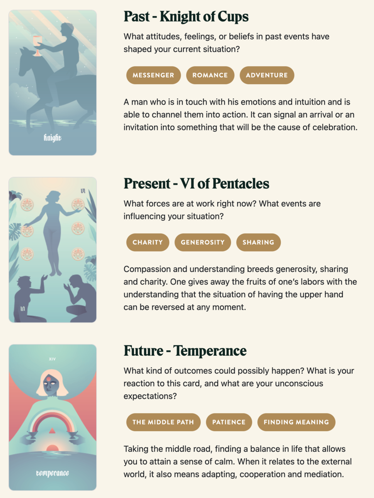

TL;DR: I'm trying to build a daily creative writing habit. This post is the result of an exercise toward that end. It's probably an awful first draft of a little flash fiction scene, unless I've tried something especially weird or decided to write something meta. Let me know what you think!
Sorrel had a small plot at the community garden. For years, he had luck growing basics like tomatoes and basil, lettuce and beets. Mostly, it was stuff that got along together and didn't take much effort. He watered a little, weeded a little, but mostly he just played in the dirt.
Sage showed up one spring at the plot next to him. She dove into growing more ambitious things like cauliflower and onions and carrots and celery. But, her efforts just left her frustrated. Too much sun and water or not enough. Harvested too early or too late.
One afternoon Sorrel heard Sage muffle a frustrated scream. He paused in his puttering to glance over.
She met his glance with a sheepish grin and said, "Wanna trade?"
"Excuse me?"
"Your tomatoes for my disgusting black celery?" She held up a few sad looking stalks suffering from blackheart.
He chuckled. "No thanks. You can just have some if you want, I've got plenty."
"Lucky you."
"You want some help? I'm no expert but I have a few things growing okay."
She sighed. "Actually, yeah, if you don't mind?"
"I don't mind at all," he said.
For the rest of that season, Sorrel and Sage tended their plots together. She would often show up to find him watering and weeding for the two of them and she'd bring him lunch.
As it turned out, Sage was a chef. She'd started the plot to learn more about the vegetables she used at her restaurant. She was far better at turning the plants into something delicious than growing them in the first place.
The next season, Sage cleared a little plot next to the restaurant and Sorrel lent his green thumb to her menu.
Prompt
Take a look at my Labyrinthos Tarot Reading!
